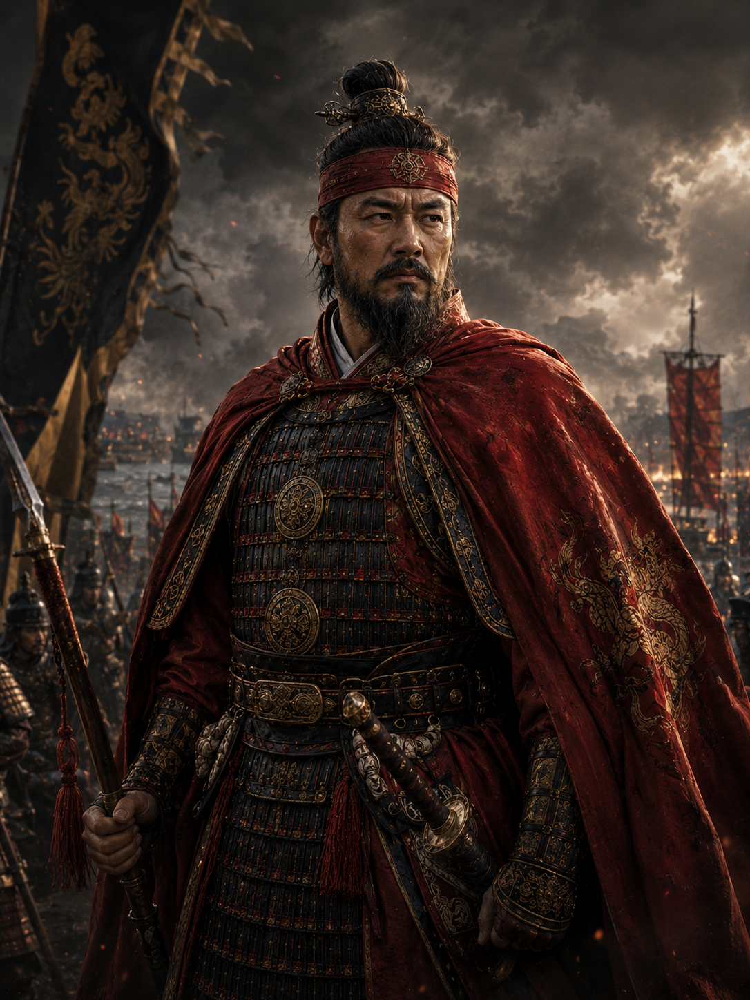
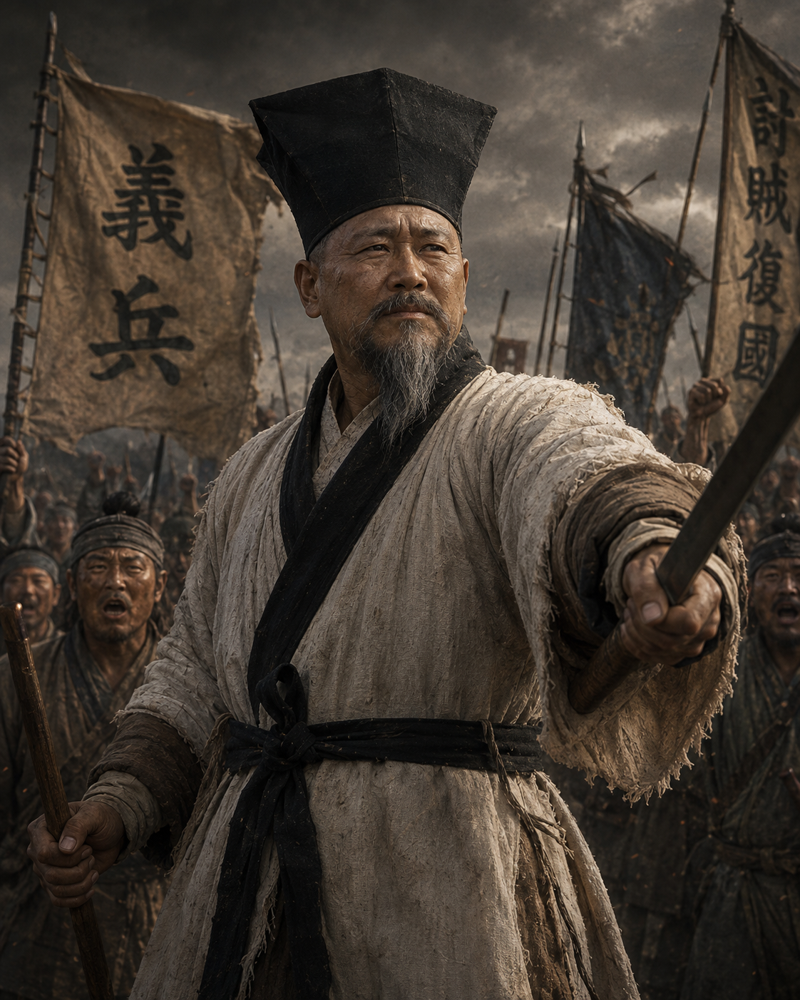
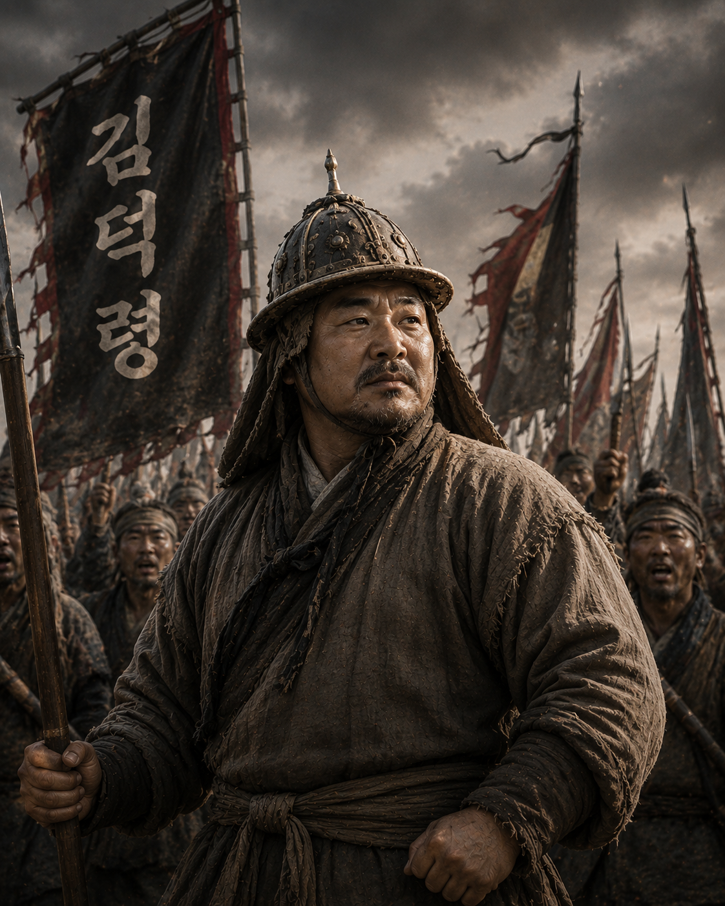
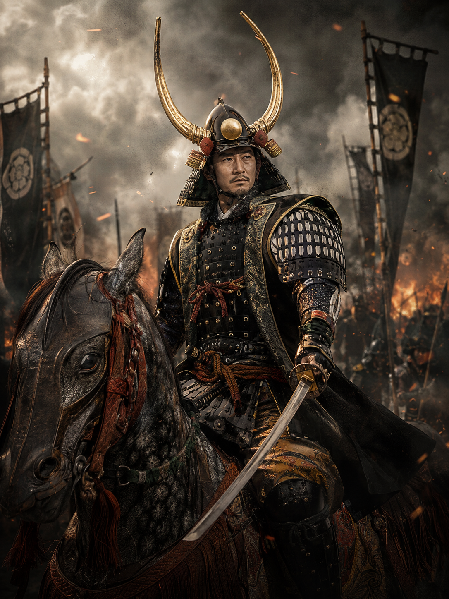
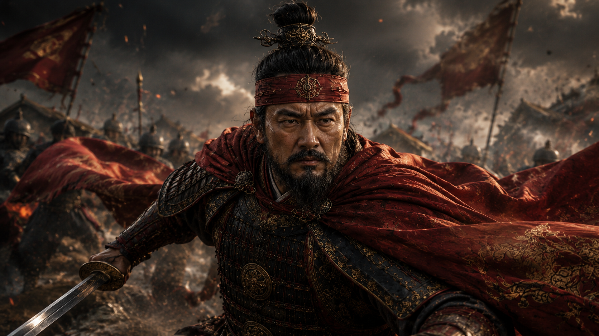
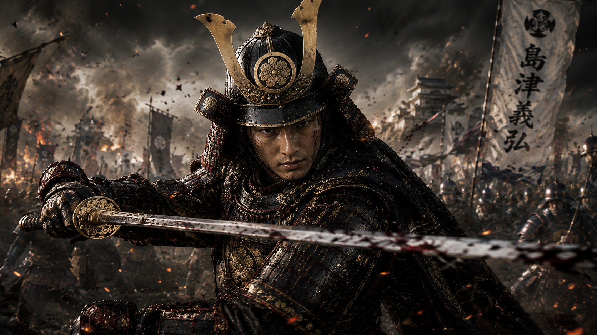

한반도 MVP 번외 작업 — 임진왜란전 작업
44명에서 시작해 갑판전의 밑돌까지
2026년 08월 23일열 명이 늘었다
한반도 MVP 본편 작업과는 별개로, 임진란 전투화면을 위한 신규 장수 10명이 들어왔다. 조선 쪽은 이순신·권율에 곽재우·고경명·김덕령이 더해졌고, 일본 쪽은 고니시·시마즈에 히데요시·가토·구로다가 더해졌다. 신규 5명(조선 3, 일본 2)은 원본 PNG와 Godot import 파일까지 전부 확인돼서, 이미지 자산과 엔진 반영 단계까지는 이미 PASS된 상태로 시작했다.
김작곽재우 : 홍의장군, "붉은 깃발이 보이거든 이미 늦었다!"
고경명 : 호남의병, "나라가 위급한데 어찌 나서지 않겠는가!"
김덕령 : 충용장, "충용군이 간다! 길을 열어라!"
김작가토 기요마사 : 칠본창, "칠본창의 이름을 걸고 정면을 뚫는다!"
구로다 나가마사 : 세키가하라 조략, "칼을 맞대기 전에 적부터 갈라놓는다"
도요토미 히데요시 : 태합호령, "천하를 얻었으니 이제 바다 너머다!"
고니시 유키나가 : 해상보급로, "바다가 열려 있는 한, 우리 군은 멈추지 않는다!"
시마즈 요시히로 : 시마즈의 퇴구, "퇴각이라 생각했나? 지금부터가 반격이다!"
한국 신규 3명과 일본 신규 2명, 여기에 기존 시마즈까지 캐릭터 아트가 이렇게 모였다.






컷인 이미지 규격도 이번에 확정했다. 1280×720 PNG, 인물의 얼굴·상반신은 세로 중앙부에 배치하고 상하단은 약간 잘려도 되는 배경으로 구성한다. 이름·고유기명·대사는 이미지 자체에 넣지 않는다 — 이건 이전 13명 작업 때 확정한 원칙 그대로, 텍스트는 항상 별도 레이어로 얹는다.
44명, 그리고 두 개의 남은 문제
기존 39명 기준을 44명으로 승격하는 작업이 이어졌다. 신규 5명을 실제 Godot 런타임 데이터에 등록하고, 고유기 검증까지 돌렸다. 결과는 3명 완전 PASS, 2명은 핵심 효과는 정상이지만 설계 문구가 실제 동작과 어긋나는 지점이 있었다.
고경명의 〈호남의병〉, 가토의 〈칠본창〉, 구로다의 〈세키가하라 조략〉은 전부 설계대로 작동했다. 문제는 곽재우와 김덕령이었다. 곽재우 〈홍의장군〉은 포위 교란 효과 자체는 정상인데, 설명에 있던 "사용 후 1칸 재배치"가 실제로는 구현돼 있지 않았다 — 현재 시스템의 이동 명령은 후퇴 계열로만 발생해서, "원하는 인접 1칸으로 재배치"와는 다른 기능이었다. 김덕령 〈충용장〉은 초고위력 돌격 피해와 진형 붕괴는 정상 작동했지만, "선봉 첫 공격 보정과 결합"이라는 설명이 문제였다. 김덕령은 돌격이 주 역할, 선봉은 보조 역할인데, 지금 구조는 주 역할만 실제 전투 계약에 연결되고 보조 역할은 문자열로만 남아있어서 선봉 보정이 실제로는 적용되지 않았다.
이럴 때 임의로 손대지 않는 게 원칙이었다. 판단은 이렇게 났다 — 김덕령은 기능을 억지로 늘리는 대신 설명에서 "선봉 결합" 문구만 빼고 정직하게 정리하고, 곽재우는 반대로 이미 확정한 캐릭터성을 살리기 위해 단순 후퇴로 타협하지 않고 "1칸 선택 재배치" 기능을 정식으로 구현하기로 했다.
이건 한반도 MVP 본편이 아니라 번외편이다
여기서 중요한 판단이 하나 있었다. 신규 장수 데이터를 하루하루 채워 넣는 방식으로 계속 가면, 결국 "우리가 대체 뭘 완성하려는 거지?"가 될 위험이 있었다. 실제로 구조를 다시 보니 신규 5명의 전투 설계 데이터는 44명 체계로 늘어났는데, 월드맵 장수 생성은 여전히 기존 등록 장수만 만들고 있었고, 초기 충성도 데이터도 신규 5명이 빠진 39명 상태였다. 즉 여기까지는 "전투 설계 데이터 확장"만 끝난 것이고, "게임에 실제 등장시키는 통합 단계"는 아직 시작도 안 한 것이었다.
그래서 이 작업 전체를 IMJIN DEMO EXTENSION이라는 별도의 번외편으로 명확히 분리했다. 기존 한반도 MVP는 절대 건드리지 않는다는 전제 위에, 목표를 하나로 못박았다 — F5 월드맵에서 신규 장수를 실제로 보고 선택해서 Battle_Land까지 진입시키는 것, 그리고 별도의 F6 테스트에서는 한국 5 vs 일본 5의 완성된 전투를 바로 시연하는 것.
작업 순서는 이렇게 잡았다.
- D0 — 44명 데이터 계약 정상화: HeroDesignDataRegistry가 39명이 아니라 44명을 기대하도록 바꾸고, 신규 5명의 initial_loyalty는 새로 창작하지 않고 기존 runtime fallback 값(80)을 그대로 명시적으로 고정했다.
- D1 — 신규 5명 월드맵 등록: 곽재우·고경명·김덕령은 한성, 가토·구로다는 오사카로 배치했다. 기존 시마즈·고니시는 규슈 지역에 그대로 뒀다 — 이미 있는 월드맵 설정은 훼손하지 않는 게 원칙이었다. 신규 5명은 identity만 등록하고, 능력치·병종·고유기는 이미 만들어둔 generated 44명 데이터가 그대로 덮어쓰도록 했다.
- D2 — 장수 클릭부터 Battle_Land 진입까지: 여기서 반가운 결과가 나왔다. 현재 전투 쪽은 특정 장수 이름을 하드코딩해서 통과시키는 구조가 아니라, hero_id 기반으로 generic하게 동작하는 구조였다. 그래서 신규 5명을 위한 별도 handoff 코드를 만들 필요가 전혀 없었다 — 감사 결과 수정 없이 그대로 통과.
- D3 — Test1은 보존, Test2를 새로 만든다: 기존 한국 vs 중국 테스트 씬을 그대로 두고, 그 씬을 상속하는 새 씬
Battle_UI_Production_Imjin_Test.tscn을 만들어 한국 5 vs 일본 5 시나리오를 얹었다. 여기서 지킨 원칙이 하나 있다 — Test2를 만들기 위해 Test1을 복제해서 따로 발전시키지 않는다는 것. 디자인과 전투 로직은 공통으로 두고, 그 아래 시나리오 데이터만 한국-중국(Test1)과 한국-일본(Test2)으로 나눴다. 이렇게 하면 나중에 HUD 디자인을 바꾸거나 현재 행동자 창을 수정해도 양쪽이 같이 따라온다. - D4 — QA와 연출 잠금: Test2에서 5:5 시작부터 로스터, 현재 행동자 HUD, 이동·공격·고유기·기세 변화, AI 턴, 전장보급, 전투기록까지 한 번에 시연 가능하게 만들었다.
Test2의 5:5 구성은 이렇게 확정됐다.
| 진영 | 주전1 | 주전2 | 주전3 | 지원1 | 지원2 |
|---|---|---|---|---|---|
| 🇰🇷 한국 | 이순신 | 곽재우 | 김덕령 | 권율 | 고경명 |
| 🇯🇵 일본 | 도요토미 히데요시 | 시마즈 요시히로 | 가토 기요마사 | 고니시 유키나가 | 구로다 나가마사 |
한국은 궁병·보병·기병, 일본은 보병·총병·기병이 섞여서 화면 자체가 다양하다. 특히 일본 총병이 들어가면서 기존 한국-중국 테스트와도 시각적으로 확실히 구분됐다.
구조적으로 가장 중요한 원칙은 F5(실제 게임)와 F6(데모/QA)를 완전히 분리한 것이었다. WorldMap 실제 HERO_DATA → 장수 선택 → 전투 편성 payload → Battle_Land로 이어지는 게 production 경로고, Test2 시나리오 데이터 → Battle_UI_Production_Imjin_Test로 이어지는 게 데모/QA 경로다. 이 둘을 섞지 않는 것이 핵심이었다.
해상전의 밑돌
이번 작업이 단순히 데모용 확장으로 끝나지 않는 이유가 하나 있었다. 임진란 전투화면이 향후 해상전투 설계의 초석이 되도록 미리 잡아둔 것이다.
육상전의 공격 표현이 검·화살·기마돌격·총이라면, 해상전은 포격·화공·총·활·돌격박치기의 5계열로 잡기로 했다. 중요한 건 총과 활이 해전에서도 그대로 살아있다는 점이다 — 배끼리 붙기 전에는 포격·화공, 중거리에서는 총·활, 완전히 접근하면 충각 같은 돌격박치기가 들어가는 구조다. 이렇게 잡아두면 나중에 육상전의 attack visual type(melee/arrow/cavalry/gun)을 해상 표현(cannon/fire/gun/arrow/ram)으로 그대로 갈아끼울 수 있다.
여기에 한 층이 더 있다. 두 배가 붙으면(접현) 전투가 "해상 갑판 위의 육상전"으로 전환된다는 개념이다. 해상전은 결국 한 전투 안에 세 층이 생긴다 — 원거리 해상전(포격·화공), 접근/충돌전(돌격박치기·선체 충돌·이동 방해·접현 판정), 그리고 접현 후 갑판전(검·창·활·총·고유기를 그대로 쓰는 육상전의 변형). 갑판전을 완전히 새로운 전투엔진으로 만드는 대신, 기존 Battle_Land를 최대한 재사용하는 구조로 미리 잡아뒀다 — 맵이 성·평야 대신 배 갑판이고, 좁고, 난간·돛대·선실 같은 장애물이 있고, 패배 시 배가 나포될 수 있다는 게 차이다.
이렇게 설계해두면 나중엔 이런 장면도 가능해진다. 이순신 함선과 일본 함선이 접근해서 화살·총격을 주고받고, 일본 함선이 접현하면 화면이 전환되면서 갑판 위에서 김덕령과 가토 기요마사가 육박전을 벌이는 것. 지금 만들고 있는 로스터, 행동 순서, 현재 행동 장수 HUD, 기세, 고유기, 전투기록 시스템을 갑판전에서도 거의 그대로 쓸 수 있다는 게 이 설계의 핵심 장점이다. Test2를 한국 vs 일본으로 별도 시나리오 분리해둔 것도, 나중엔 Land Test → Naval Test → Deck Test로 그대로 확장될 수 있는 구조이기 때문이다.
8명의 컷인, 자동으로 확인하기
신규 8명(한국 3 + 일본 5)의 컷인 영상 작업도 진행했다. 방식은 기존 13명 때와 동일했다 — 4.01초짜리 MP4 원본만 넘기면, Theora OGV 최적화 변환부터 파일명 규격 통일, 레지스트리 연결, 재생 QA까지 전부 처리하는 파이프라인. 8명 전부 원본과 변환본 검증까지 PASS됐다.


여기에 8명을 일일이 전투시켜 보지 않아도 되도록 자동 연속 QA 씬(Imjin_Cutin_Visual_QA.tscn)까지 만들었다. 기존 컷인 프리젠테이션 구조를 그대로 사용해서 8명을 순서대로 자동 재생하는 씬이라, F6 한 번 누르면 8명이 약 35초 동안 쭉 나온다. 영상·장수명·고유기 글씨·화면 깨짐만 확인하면 끝이었다.
병합 문 앞에서
이 번외편 전체는 별도 브랜치(feature/imjin-d0-d1-worldmap-heroes)와 Draft PR에서 진행됐다 — main은 검증이 끝나기 전까지 건드리지 않는다는 원칙이었다. 남은 조건은 세 가지였다. 기존 Test1(한국-중국)이 이번 작업으로 깨지지 않았는지 회귀 플레이 확인, 월드맵 영웅 통합·Imjin Test2·컷인 세 개의 validator가 전부 PASS, 그리고 git diff가 깨끗한지. main 기준 diff는 behind 0 / ahead 14, 합의한 범위의 12개 파일만 변경된 상태로 확인됐다 — 기존 Test1을 갈아엎은 게 아니라 Test2가 온전히 별도로 추가된 구조였다.
다음 화면
임진왜란 번외편이 병합을 기다리는 사이, 한반도 MVP 본편 쪽 전투 UI 작업도 새 브랜치(feature/battle-ui-next-pass)로 다음 단계를 준비했다. 현재 상태창이 비어있을 때 완전히 죽은 공간으로 남는 대신, 아무 상태도 없을 땐 "상태 아이콘 범례"를 보여주고 실제 버프·디버프가 하나라도 생기면 범례를 숨기고 실제 상태 표시로 전환하는 작업이다.
기호도 확정했다 — ▲▼ 공격, ◆ 방어, ↑↓ 이동, ◎ 혼란, ⚠ 동요, ※ 화상, ⊘ 행동불가. 220px 폭 안에서 2열×4행으로, 왼쪽엔 공격·방어·이동·행동불가, 오른쪽엔 혼란·동요·화상을 배치하기로 했다.
한반도 MVP 본편과 임진왜란 번외편이 같은 전투 엔진과 데이터를 공유하면서도 서로를 건드리지 않고 나란히 자라고 있다.